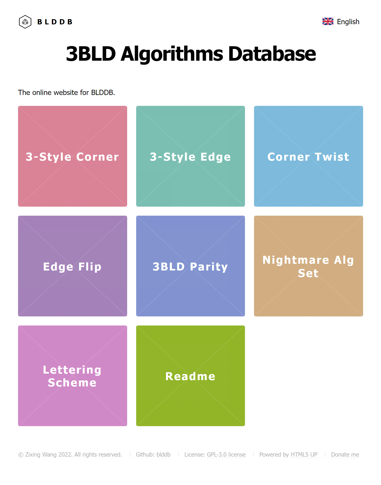
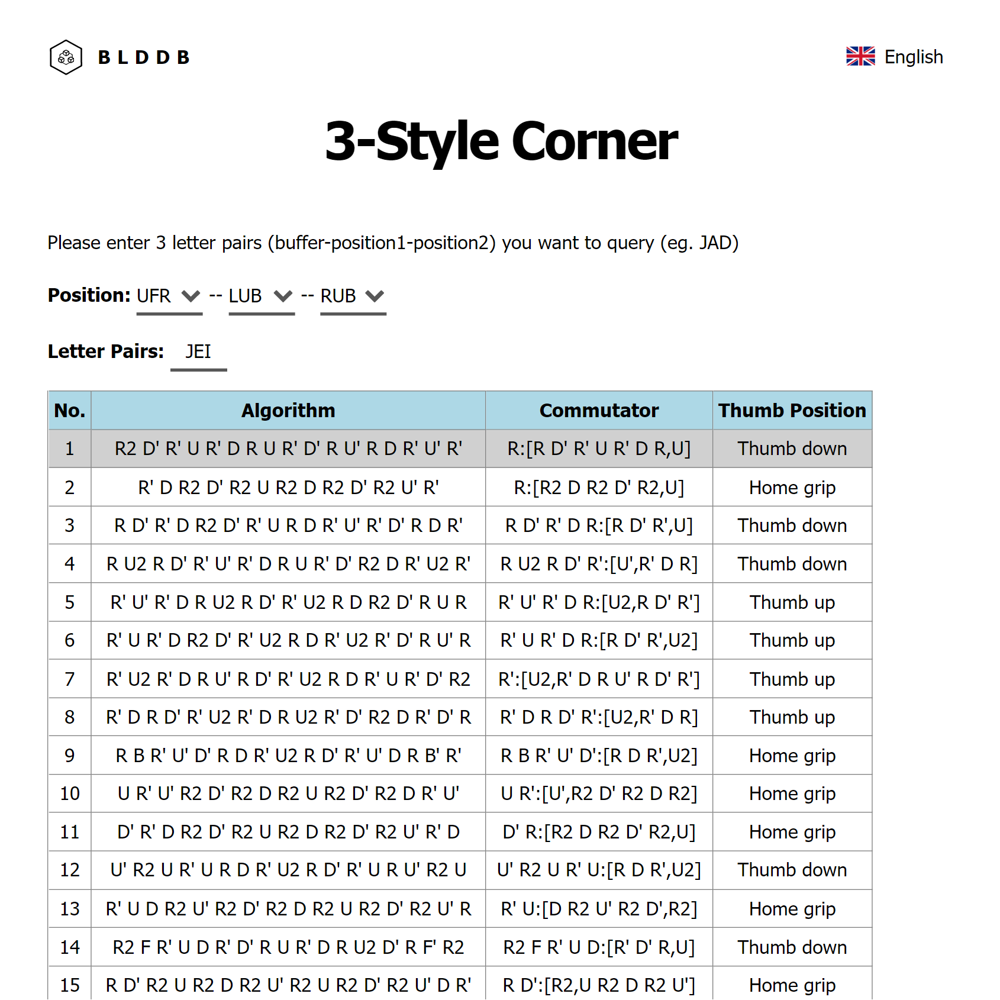
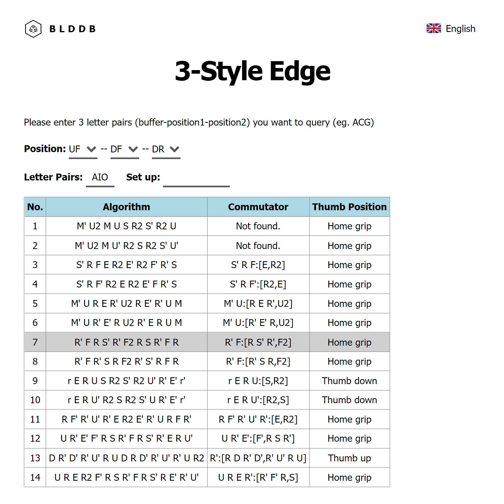
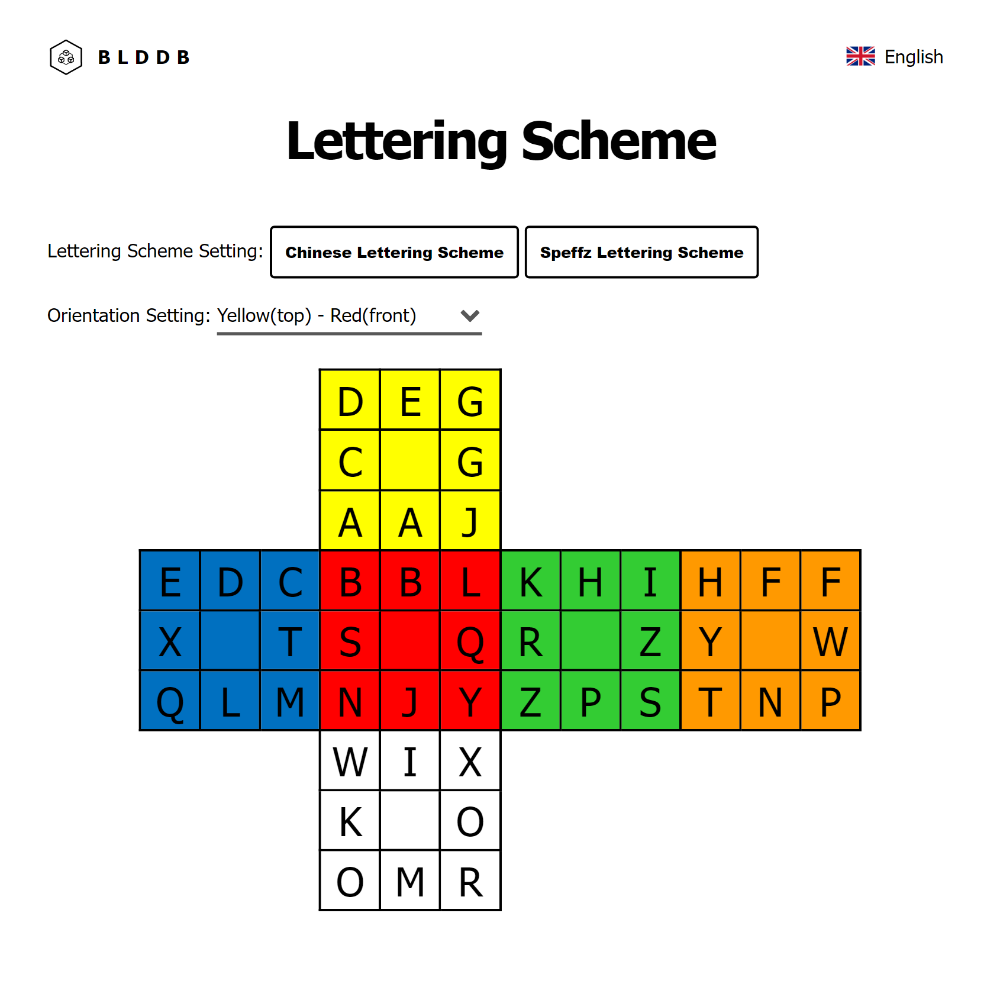

Readme
ABOUT THE AUTHOR
My name is Zixing Wang (2018WANZ50). I want to introduce my new website (blddb.net) in this article. This website includes thousands of algorithms including corner twist, edge flip, 3-style corner (all buffers), 3-style edge (all buffers). It supports simplified Chinese and English, and is compatible with mobile phones, PCs and tablets. The website provides many options for each case, so the readers can select algorithm based on their own preference.
WHAT IS NIGHTMARE SYSTEM?
Yifan Wang (2017WANY29) proposed the nightmare system in early 2020. In the nightmare system, there are no L layer moves. Left hand is always in home grip position and most of the operations are done by right hand. The average move count may be longer than the traditional 3-style because there are no lefty-style algorithms. However, the time in swapping between lefty-grip to righty-grip is reduced, which leads to great potential of speeding up your solve.
MODULES
Currently, there are seven modules in this website, 3-style corner, corner twist, 3-style edge, edge flip, 3BLD parity, lettering scheme and readme.
3-style corner, corner twist and 3BLD parity
All the algorithms provided go inline with the nightmare system and are generated by the program. The author ranks the algorithms by defining "equivalent moves". There are 55 different parameters in calculating equivalent moves. For example, an algorithm has a higher number of equivalent moves if D and D' are not alternate. Move D2 also increases equivalent moves (that’s why [D2, R U R'] ranks 7). The author mainly uses the nightmare algorithm set as training data, and adjusts the weight parameters through the simulated annealing algorithm, so that the algorithm used in the latest nightmare algorithm set is ranked as high as possible among all the alternative algorithms. 18 algorithms with the highest ranking are displayed on the website and the one in gray is the main algorithm in the latest nightmare algorithm set.
Enter the letter pair (buffer included) or the position to query. There will be at most 18 algorithms provided. It also provides a commutator form and recommendation position of gripping the cube.
3-style edge and edge flip
Most of the algorithms are traditional ones (including some symmetrical cases or swapping U, U' moves simply). It is temporarily impossible to brute-force all the positive solutions under the similar restrictions. Thus, the ranking is based on the number of moves (STM). At most 18 algorithms with the highest ranking are displayed on the website and the one in gray is the main algorithm in the latest nightmare algorithm set. For each specific 3-edge-cycle, users can enter the starting move sequence to filter the algorithm.
Lettering scheme
The Chinese lettering scheme and yellow(top)-red(front) is set as default. Speffz lettering scheme is also added. For users with a different coding system, they can modify the letter in the cube manually. Users can also change the orientation into their preferred one.
LICENSE
This project is licensed under GPL-3.0. The website template is licensed by HTML5 UP under CCA 3.0.
ACKNOWLEDGMENTS
Many thanks go to the blinders who gave advice and suggestion on this website. I am especially grateful to Yifan Wang (2017WANY29) who proposed and developed the nightmare system and nightmare algorithm set. You are more than welcome to share this website to others. Please contact me if you have further comments or questions.
Last edited on September 16th, 2022.
Translated from the Chinese original by Chenhao Sun.
Translation reviewed by Abhijeet Ghodgaonkar.